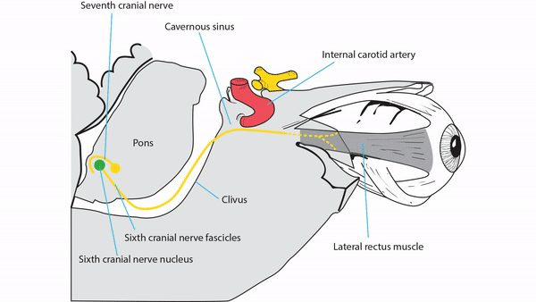
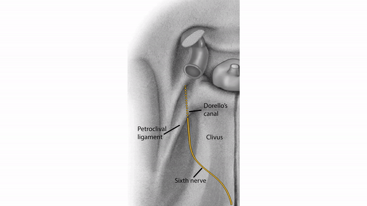
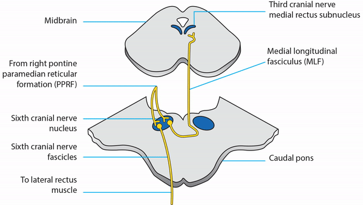
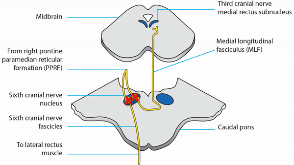
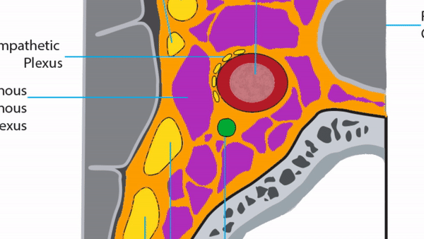
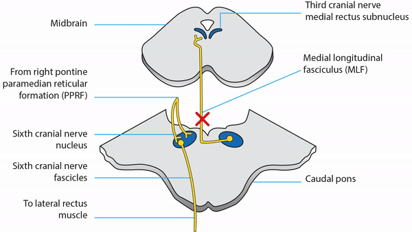
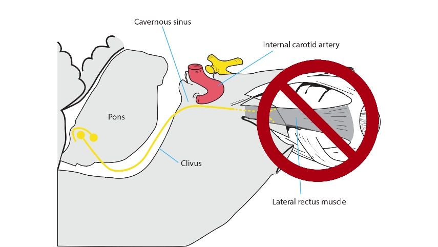

Sixth Nerve Pathway
-
Nuclear segment
- Lies in the floor of the fourth ventricle at the pontomedullary junction
-
Internuclear segment
- Axons leave the sixth nerve nucleus and travel in the contralateral medial longitudinal fasciculus, ending on the contralateral medial rectus subnucleus to mediate adduction of the contralateral eye
-
Fascicular segment
- Axons proceed ventrally through the pontocerebellar and corticospinal tracts to exit the brainstem at the pontomedullary junction, eventually to supply the ipsilateral lateral rectus muscle
-
Subarachnoid segment
- Nerve travels rostrally along the clivus, passing through Dorello’s canal into the cavernous sinus
-
Cavernous segment
- Nerve enters the floor of the cavernous sinus, where it lies inferolateral to the internal carotid artery within a venous plexus
-
Orbital segment
- Nerve enters the orbit through the superior orbital fissure within the muscle cone to supply the lateral rectus muscle




-
Nuclear lesion
- Congenital lesion usually affects only the fascicular neurons, sparing the interneurons that ascend in the MLF
- In a congenital sixth nerve nuclear lesion, aberrant co-innervation of the medial and lateral rectus muscles by axons from the third nerve nucleus produces co-contraction of those muscles on attempted abduction, narrowing of the palpebral fissure on adduction, and abnormal upshooting or downshooting of the affected eye on adduction
- Depending on the proportion of innervation to the two extraocular muscles, different eye movement and alignment abnormalities occur in a congenital sixth nerve nuclear lesion
-
Tip: in congenital sixth nerve nuclear lesions, horizontal gaze deficits do not occur because the interneuronal axons that travel in the MLF are spared
-
Acquired sixth nerve nuclear lesions affect both fascicular axons and interneuronal axons, producing
- Ipsilateral gaze palsy, which means impairment of all ipsilateral horizontal gaze movements, including saccades, pursuit, and the vestibulo-ocular reflex, often accompanied by an ipsilateral lower motor seventh nerve palsy because seventh nerve fascicles curl dorsally around the sixth nerve nucleus before exiting the brainstem
- Common causes: stroke, hemorrhage, inflammation
 - Internuclear (medial longitudinal fasciculus) lesion
-
Combined nuclear and ipsilateral internuclear lesion
- Produces an ipsilateral gaze palsy (sometimes with contralateral gaze deviation) and an adduction deficit of the ipsilateral eye (“one-and-a-half syndrome”)
- Common causes: stroke, hemorrhage, inflammation
- Fascicular lesion
-
Combined fascicular and ipsilateral internuclear lesion
- Produces ipsilateral abduction and adduction deficits
- Common causes: ischemic stroke, hemorrhage, inflammation
-
Subarachnoid lesion
- Produces an ipsilateral abduction deficit and esotropia
- Localizing palsies: caused by lesions along the subarachnoid course of the sixth nerve, including head trauma, meningitis, subarachnoid hemorrhage, and masses or inflammations of the clivus, sphenoid sinus, or petrous apex
- False-localizing palsies: caused by intracranial hypertension or hypotension, which displace the brain downward and stretch the sixth nerve where it is tethered at Dorello’s canal
-
Cavernous Lesion
-
Produces an ipsilateral abduction deficit and esotropia, exactly as do fascicular and subarachnoid lesions, except that there will be no signs of brainstem dysfunction and the palsy may be accompanied by
- Ipsilateral Horner syndrome
- Trigeminal deficits
- Third and fourth nerve palsies
- Common causes: cavernous aneurysms, tumors, venous thrombosis, fistulas, inflammations
 -
Produces an ipsilateral abduction deficit and esotropia, exactly as do fascicular and subarachnoid lesions, except that there will be no signs of brainstem dysfunction and the palsy may be accompanied by
-
Orbital lesion
- Causes an ipsilateral abduction deficit and esotropia
-
Tip: orbital lesions rarely cause sixth nerve palsy because the orbital segment of the nerve enters the belly of the lateral rectus muscle in the far posterior orbit; abduction deficits from orbital disease usually result from damage to the lateral rectus muscle or restriction to its power by an obstructing mass or tightness of the medial rectus muscle


